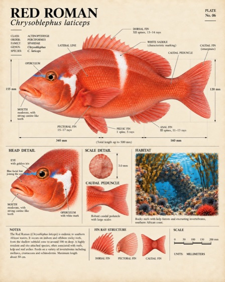
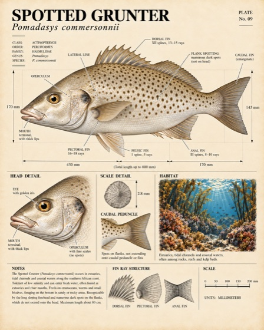

Catch locations, species totals and days on the water.
Sign in with your fishing journal account.
Opening your journal…
Home
FiltersAll species · All dates
Catches0
Species0
Catch days0
A fisherman’s diary
Make every day on the water count.
A couple of taps to record a catch. A growing record of what happened, where it happened and what the conditions were like.
Fishing trips can be months apart. This journal helps turn those scattered days into something we can learn from, instead of relying on memory and advice alone.
Record the time spent fishing as well as the fish caught. A trip with no catches still teaches us something: it shows how much effort went into the result.
Put each catch in context: the spot, weather, water and your own observations. Compare visits to the same place rather than trying to remember which day worked.
Unless fishing is your profession, there never seems to be enough time for it. If you return to the water once a year, or whenever life allows, it is hard to build a clear picture of what is happening beneath the surface.
We hear things like “they bite when the southwester blows.” That might be a useful clue, but a story is hard to check without a record of the days it worked—and the days it didn’t. Someone who lives at the coast and fishes all the time has years of experience that an occasional visitor cannot easily catch up with.
Make better use of the tools we have
The biggest improvement in my own fishing has come from learning to use technology properly. I have spent hours understanding my fish finder—the sonar screen that helps me read fish and the seabed: its settings, what changes at speed, and what different fish and bottom shapes look like.
This journal is the next step. Instead of trying to remember every detail, I can keep it, compare it and learn from it. The idea is useful even if you don’t fish: collect evidence about a question you care about, then use it to make better decisions.
A personal collection of lessons from fishing off Buffelsbaai: reading the water, understanding the fish finder and learning from every trip. Here are three extracts from the book.
“After countless trips, successes, failures, and lessons, this guide serves as a collection of refined techniques, spot insights, seasonal patterns, and practical tips.”
“Use your footage not just to tell stories, but to review your technique. Watch your drift angle, how quickly you hook up after sonar marks, or how fish behave once hooked. It becomes a tool for improvement.”
One of my biggest largemouth bass, caught in the Stellenbosch mountains near Jonkershoek.Santer on a SquidTrex jig. A wind-still day with perfect conditions near Gericke’s Point.Staal Erasmus with a knifejaw from a spearfishing trip. A lovely eating fish, and a privilege to take friends out spearfishing.
02 / From wrist to journal
Fish first. Keep a record as you go.
The current setup pairs a Garmin fēnix 5X with Garmin Connect on the phone and this private web journal.
1
On the watch
Start a trip and select the species when you catch a fish. The watch saves its time and position while you carry on fishing.
2
Across the connection
Garmin Connect on the phone transfers the saved catch and trip records to your private online journal.
3
In your journal
The catch’s time and position link it to weather and sea information from online data services (APIs). The original records, conditions and their sources are saved together in the database.
What we actually collect
One catch. A whole set of clues.
A plain-language catalogue of the fishing data our Supabase database stores: your catches and GPS positions, fish lengths, daily ratings, trip effort, photos and environmental conditions. Some fields are optional, imported or calculated, so not every record has every value.
1 Log a catch on the watch2 The phone sends the record3 Match its time and place to conditions4 Save it together in the private database
Fishing data saved in Supabase · watch records, daily observations, API conditions and their sources
Parameter
Symbol / unit
In plain language
Your catch · recorded on the watch
Fish species
Name / species ID
The selected species, its original recorded name and the species reference used by the journal.
Fish length
cm · centimetres
The length entered on the watch, saved with the original catch record. Older catches may have no length.
GPS position
° · latitude & longitude (WGS84)
Where the catch was recorded. Locations are also saved for fishing sessions, spots and imported boat readings.
Catch date & time
Date and time
When the fish was recorded, used to match the catch to its conditions.
GPS time, quality & source
Timestamp / fix quality
When the position was obtained, its quality and how the location was determined.
Fishing type
Offshore / shore
The fishing mode saved with catches, trips, sessions, spots and daily observations.
Boat position method
Anchored / drifting
Whether the boat was anchored or drifting when the catch was saved.
Fishing method
Bait / jigging
The selected fishing method recorded with the catch.
Catch or no-bite observation
Record category
Distinguishes landed fish, no-bite observations and setup-test records.
Estimated fish weight
kg · kilograms, when available
A calculated weight estimate linked to a catch and a supported length–weight model; not a weighed measurement.
Your day · notes, photos & sensory ratings
Day & local time zone
Date / Africa/Johannesburg
Which fishing day the notes and ratings describe.
Enjoyment rating
0–10 · personal score
How enjoyable the day was, regardless of the number of fish caught.
Water clarity rating
0–10 · personal score
Your impression of water clarity across the day; not measured underwater visibility.
Sea comfort rating
0–10 · personal score
How comfortable the sea felt; not a wave-height measurement.
Current strength rating
0–10 · personal score
How strong the water movement felt; separate from API-modelled current speed.
Bite activity rating
0–10 · personal score
How active the bites were, including bites that did not produce a landed fish.
Baitfish activity rating
0–10 · personal score
Baitfish you noticed at the surface or on the fish finder.
Day notes
Text
Your own observations about the day, saved alongside the ratings.
Day photo
Private JPEG image
The photo uploaded for a fishing day, stored in your private Supabase Storage folder with its file details.
Rating history & scale
Saved time / scale version
When each set of ratings was saved and which scoring scale it used. Earlier versions are retained; an unrated value stays blank.
Trips, sessions, effort & spots · recorded or derived from the watch
Trip & session start/end
Date and time
The beginning and end of each completed trip and fishing session.
Time fishing, travelling & unclassified
s · seconds
Separate durations, including time that could not be classified.
Fishing sessions
Number within a trip
Individual fishing periods so separate stops can be compared.
Fish caught & no-bite records
Counts, including per species
How many fish and no-bite observations belong to each session, including sessions with no catches.
Anglers & active lines
People / lines / change time
The saved numbers of anglers and lines, including when those settings changed.
Fishing effort
Angler-seconds / line-seconds
Fishing time adjusted for how many people and lines were active.
Activity history & corrections
Fishing / travelling / unclassified
The recorded activity periods, automatic or manual classifications and saved corrections.
GPS movement & boat speed summaries
m/s / coordinates / timestamps
Saved movement samples and five-minute speed summaries (minimum, maximum and sample counts), GPS positions and the rules used to distinguish fishing from travelling.
Fishing spot name & grouping radius
Name / m · metres
Your spot names and the distance used to group nearby fishing locations.
Weather · Open-Meteo
Air temperature
°C · degrees Celsius
How warm the air was.
Air pressure
hPa · hectopascals
Atmospheric pressure adjusted to sea level.
Wind speed
km/h · kilometres per hour
How fast the wind was blowing.
Wind direction
° · compass degrees
The direction the wind came from.
Wind gusts
km/h
The strength of short bursts of wind.
Cloud cover
% · percent
How much of the sky was covered.
Rainfall
mm · millimetres
Rain recorded for the provider’s time interval.
Humidity
%
How moist the air was.
Visibility
m · metres
How far you could see through the air.
Sea conditions · Open-Meteo Marine
Sea surface temperature
°C
How warm the water was at the surface.
Current speed
km/h
How fast the model estimates the water was moving.
Current direction
°
The modelled direction of water movement.
Wave height
m
The model’s significant wave height.
Wave direction
°
The direction waves came from.
Wave period
s · seconds
The time between waves.
Swell height
m
The height of waves travelling in from farther away.
Swell direction
°
The direction the swell came from.
Swell period
s
The time between swell waves.
Peak wave period
s · seconds, when supplied
The period of the strongest wave component in the provider history. Left blank if the provider does not supply it.
Peak swell period
s · seconds, when supplied
The period of the strongest swell component in the provider history. Left blank if unavailable.
Sea level
m
Water level relative to mean sea level, including tidal effects.
Moon, sun & calendar · calculated from the catch’s time and location
Moon phase
Phase name & 0–1 cycle
New moon, full moon and the stages between them.
Moon illumination
%
How much of the moon’s face was lit.
Sunrise, sunset, dawn & dusk
Time
The daily daylight and twilight times.
Moonrise & moonset
Time; minutes before or after
Nearby rise/set times and the catch’s timing relative to them.
Sun & moon position
°
Height above the horizon and compass direction.
Daylight, twilight & day length
Day/night; minutes
Whether the catch was in daylight or twilight, and the length of the day.
Timing relative to sunrise & sunset
Minutes
How far before or after sunrise or sunset the catch happened.
Season & time of year
Date, month & season
The local solar date, month, day of year and season.
Lunar tidal cycle
Spring/neap tendency
The moon’s broad tidal-cycle stage.
Depth & seabed · GEBCO depth maps
Estimated depth & seabed elevation
m
Mapped depth at the location; this is separate from fish-finder readings.
Seabed slope & gradients
°; m per m
The steepness and direction of changes in the mapped bottom.
Nearby seabed height range
m
The difference between nearby mapped bottom heights.
Depth-map resolution
arcsec · angular seconds
The spacing of depth-map cells, saved with the estimate.
Patterns leading up to the catch · calculated from the saved history
Recent conditions & changes
3, 6, 12, 24, 48 & 72 hours
Average, minimum, maximum, spread and change in the conditions above.
Direction consistency & changes
° / consistency score
Average direction, how consistently it held and the largest hourly shift in wind, wave, swell or current direction.
Pressure change
hPa; hPa per hour
How pressure changed, including its three-hour change and strongest hourly rises/falls.
Rain totals & strong-wind exposure
mm; hours; km/h × hours
Rain totals, rainy hours, and the duration and strength of windy conditions.
Time since weather or sea events
Hours
Time since strong wind, significant rain, strong swell, pressure change or a defined water-temperature drop.
Tidal stage & sea-level change
Rising/falling; m per hour
The direction and rate of change in modelled sea level, plus time since a recent high or low.
Experimental conditions score
1–3 · exploratory score
A basic summary of moon, wind, cloud and pressure; not a measured bite rate.
Source & coverage
Source, units, timestamps & model version
Which service supplied the data, when it applies, and which values are missing.
Boat instruments · optional imported readings
Fish-finder depth
m · metres, if imported
Depth recorded by boat electronics, kept separate from mapped seabed estimates.
Instrument water temperature
°C, if imported
Temperature from boat electronics, kept separate from modelled sea temperature.
Instrument speed over ground
m/s · metres per second, if imported
The boat’s recorded speed over the ground.
Course over ground
° · compass degrees, if imported
The direction the boat was moving over the ground.
Boat heading & reference
° / true or magnetic reference
The direction the boat was pointing and the heading reference, when supplied.
Instrument reading time & source
Timestamp / instrument record
When each imported boat reading was taken and which device supplied it.
Instrument-to-catch match
s / m / matching version
How far apart in time and distance a boat reading and catch were, and the rule used to link them.
Estimates, source history & record keeping
Weight-estimation method
Coefficients / cm / source
The length–weight formula, valid length range, reference and verification status used for any estimated weight.
History thresholds & depth band
Defined limits / m
The limits used to flag events such as strong wind, plus depth grouping and the rule excluding samples after the catch.
Uncomputed environmental indicators
Missing until supported
Reserved anomaly, upwelling and coastal-context fields are stored as unavailable where the required reference data is absent; they are not measured results.
Experimental model runs
Inputs / results / target times
When model runs are generated, their inputs, outputs, validation and information cutoff can be stored. Not a promise of a reliable prediction.
Environmental model grid position
° · latitude & longitude
The provider’s grid location, which can differ from the actual catch GPS position.
Hourly source history
Date / time range
The original hourly provider series and the history window used to describe each catch.
Seabed estimate detail
arcsec / surrounding grid cells
The underlying depth-map resolution and nearby terrain cells used to calculate slope and elevation range.
Sources, methods & units
Provider / version / units
Which service or calculation produced a value, the measurement units, model or algorithm version, and the time conventions used.
Capture, retrieval & processing times
Date and time
When the event happened, source data applied, records arrived and calculations or updates were saved.
Collection status & missing data
Status / response code / milliseconds
Whether source retrieval and processing succeeded, why data is missing, and how long requests took.
Record links & original data
Record IDs / format version
Private account and device links connect catches, trips, sessions, spots and sources. Original uploaded records and provider responses are retained for traceability.
Weather and sea values are model estimates from Open-Meteo, depth comes from GEBCO, and sun/moon information is calculated. Values are not available for every catch; missing data stays missing.
The journal also saves the species, catch time and GPS position, fishing style, trip and session times, catch counts and zero-catch sessions. Optional fish lengths, recorded fishing methods, anglers and lines add detail. Your photos, notes and day ratings capture what you experienced yourself.
My youngest brother, Marcus Swanepoel, with a red roman caught on a SquidTrex jig.My first spotted grunter on fly.My buddy with a smallmouth bass caught on fly in a river near Franschhoek.
The ten-year goal
Build the knowledge we wish we had today.
Over the next ten years, I want to build a record across hundreds or thousands of fishing trips—hopefully tens of thousands of fish—and learn from the quiet days as carefully as the successful ones.
The questions are simple: how do different fish behave and feed? When do they eat? Which species should we target, when and where should we go, and what bait, lure or technique should we try? That is the long-term destination. Today’s work is collecting the evidence, improving the record and testing what it can tell us.
My hope is to head out one day with a clear, well-supported plan: this is the species we’re targeting, this is where we’re going, and this is what we’ll offer it.
And in ten years, if a few lighties say, “That’s the guy to speak to if you want to go fishing,” I’ll know this was worth building.
See what we’re learning →Johnny McSeveny with a red steenbras. My all-time fishing mentor—the person who taught me so much of what I know, and someone I’ll always look up to.
Big santer on a SquidTrex jig. Another awesome day on the water, and another thumbnail.
Spotted grunter on fly in the Sedgefield lagoon, near the river mouth, with Mavungana Fly Fishing Adventures. Released back into the water.Just after the release—the next moment in the same sequence.
Loose pages / The photo album
A few more moments from the water.
A few more days worth remembering. The photographs keep turning as you browse.
Below the surface.Last light on the water.One more cast.A moment before the release.Rod, reel and a quiet moment.A view from the boat.Small fish, close up.A little space to fish.Another page from the water.Another page from the water.Another page from the water.Another page from the water.Another page from the water.Another page from the water.Another page from the water.Another page from the water.

A closer look at Red Roman.

A closer look at Spotted Grunter.
Photo 1 of 18
Smoothing · Auto
Wider smoothing joins nearby catch locations. This shows recorded concentration, not fishing probability.
Applies to every chart and the density map.
Species at each spot
Where catches concentrate
Smoothing · Auto
LowerHigher concentration
How to read this map
Gaussian catch density uses the same method as Map → Species. The radius is in metres and can be adjusted. Colours show relative recorded catch concentration, not fish abundance or fishing probability. Smoothing can extend onto land. No fishing-effort adjustment or habitat mask is applied.
Ratings by fishing event
Conditions when you caught fish
Catch-time model estimates and astronomy. These distributions do not account for time spent fishing in each condition.
Adjust chart intervals
Moon illumination: 0% new to 100% full, combining waxing and waning. Pressure: hPa, equivalent to mbar.
Explore another comparisonData quality & interpretation
Each chart reports its sample. Missing or unrecognised measurements are excluded, never replaced with zero. Calm currents and zero lunar phase are valid. Conditions are matched within one hour of the catch; only compatible units are compared. Repeated snapshots do not create extra catches.
Spot rates use recorded fishing sessions, including zero-catch sessions. Unclassified time is excluded from fishing hours. Small samples and incomplete GPS or recording can change rankings. No confidence intervals, causal claims or calibrated fishing predictions are implied. Charts reflect the records in your account and the selected filters.